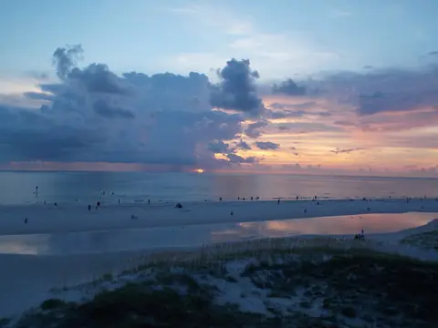

Gulf Beaches · Beach town
Clearwater Beach
The City of Clearwater's beach, on a barrier island joined to the mainland by the Clearwater Memorial Causeway, with about 2.5 miles of white quartz sand and calm, shallow water just steps from hotels and restaurants. Pier 60 anchors the beach and hosts the nightly Sunsets at Pier 60 celebration with street performers and vendors.
white quartz sand · Pier 60 and Sunsets at Pier 60 · pirate, dolphin and dinner cruises · parasailing and jet skis · beachfront resorts